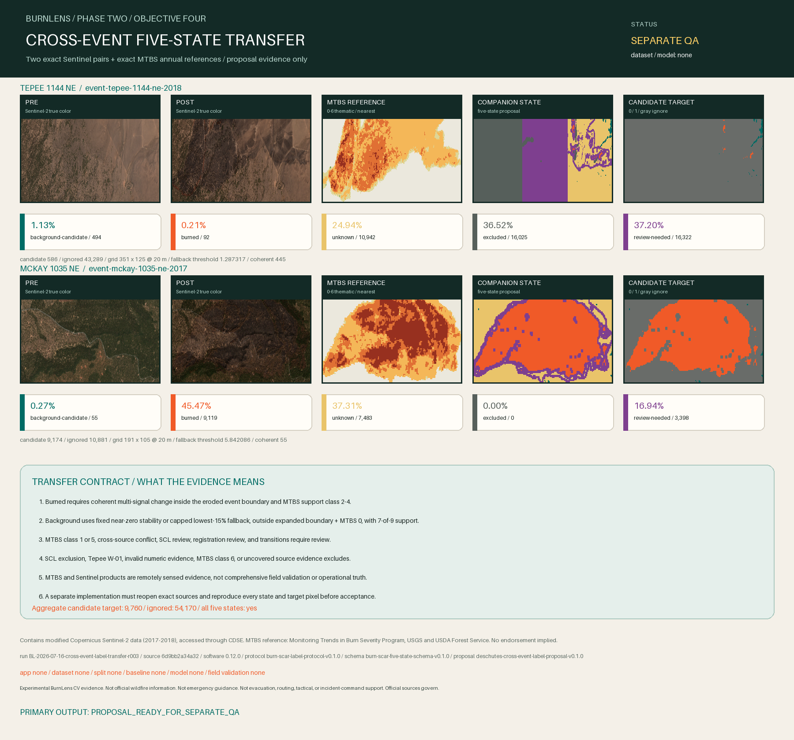

Experimental BurnLens CV evidence. Not official wildfire information. Not emergency guidance. Not evacuation, routing, tactical, or incident-command support. Official sources govern.

Decision
PROPOSAL_READY_FOR_SEPARATE_QA
Both frozen events contain burned and background candidate pixels while preserving aggregate five-state uncertainty and all Tepee source-fitness exclusions. Separate software QA and rendered review remain required before proposal-level acceptance.
Aggregate: 9,760 candidate target pixels and 54,170 ignored pixels. All five states are represented. A separately invoked QA report is still required.
TEPEE 1144 NE
event-tepee-1144-ne-2018
Fire / geography / scene / time: OR4383912111420180907 / geo-tepee-1144-ne-2018-mtbs-boundary / scene-or4383912111420180907-789704b12eb7 / time-2018-09-07
| State | Code | Target | Pixels | Share |
|---|---|---|---|---|
| background-candidate | 0 | 0 | 494 | 1.1259% |
| burned | 1 | 1 | 92 | 0.2097% |
| unknown | 2 | ignore | 10,942 | 24.9390% |
| excluded | 3 | ignore | 16,025 | 36.5242% |
| review-needed | 4 | ignore | 16,322 | 37.2011% |
Authorized stability fallback: normalized threshold 1.287317; 445 coherent fallback pixels. This is an event-relative proposal screen, not universal calibration.
MTBS values and registration bindings
| MTBS code | Pixels |
|---|---|
| 0 | 21,574 |
| 1 | 2,429 |
| 2 | 12,612 |
| 3 | 6,512 |
| 4 | 737 |
| 5 | 11 |
W-01: excluded / ELIGIBLE_FRACTION_BELOW_GATEW-02: review-needed / BAND_CONSENSUS_EXCEEDS_GATEW-03: pass / CONTENT_REGISTRATION_PASS
Outputs: CROSS-EVENT-LABEL-TRANSFER-2026-001-tepee-1144-ne-2018-state.tif / CROSS-EVENT-LABEL-TRANSFER-2026-001-tepee-1144-ne-2018-target.tif
MCKAY 1035 NE
event-mckay-1035-ne-2017
Fire / geography / scene / time: OR4375212142520170829 / geo-mckay-1035-ne-2017-mtbs-boundary / scene-or4375212142520170829-fe36a9c858bd / time-2017-08-29
| State | Code | Target | Pixels | Share |
|---|---|---|---|---|
| background-candidate | 0 | 0 | 55 | 0.2742% |
| burned | 1 | 1 | 9,119 | 45.4700% |
| unknown | 2 | ignore | 7,483 | 37.3124% |
| excluded | 3 | ignore | 0 | 0.0000% |
| review-needed | 4 | ignore | 3,398 | 16.9434% |
Authorized stability fallback: normalized threshold 5.842086; 55 coherent fallback pixels. This is an event-relative proposal screen, not universal calibration.
MTBS values and registration bindings
| MTBS code | Pixels |
|---|---|
| 0 | 7,286 |
| 1 | 196 |
| 2 | 4,266 |
| 3 | 3,952 |
| 4 | 4,355 |
W-01: pass / CONTENT_REGISTRATION_PASSW-02: pass / CONTENT_REGISTRATION_PASSW-03: pass / CONTENT_REGISTRATION_PASS
Outputs: CROSS-EVENT-LABEL-TRANSFER-2026-001-mckay-1035-ne-2017-state.tif / CROSS-EVENT-LABEL-TRANSFER-2026-001-mckay-1035-ne-2017-target.tif
Frozen transfer method
Native 20 m B04/B8A/B12 changes reuse the established Darlene 3 proposal-screen hypothesis.
- Sentinel SCL and source-fitness registration states constrain eligibility; they never identify burn truth.
- Nearest-neighbor annual thematic severity supports classes 2-4, reserves classes 1/5 for review, excludes class 6, and never creates a burned candidate without coherent spectral evidence inside the frozen boundary.
- Background candidates require affirmative stability outside the expanded event boundary and MTBS class 0. The fixed Darlene near-zero rule remains primary; the authorized binary-mask fallback admits only the lowest 15% normalized non-burn change tail, capped at score 6.0 and requiring 7-of-9 support. Boundary absence alone is insufficient.
- Cross-source conflict, ambiguous MTBS evidence, boundary transition, quality review, and burned transitions stay review-needed; unsupported usable pixels stay unknown.
Threshold scope: transfer hypothesis inherited from the exact Darlene 3 proposal; not universal calibration
Traceability
Run: BL-2026-07-16-cross-event-label-transfer-r003
Git source: 6d9bb2a34a32f775e4bf83249151e41c25998ee5
Software / report: 0.12.0 / cross-event-five-state-label-transfer-evidence-v0.1.0
Label protocol / schema / proposal / transfer: burn-scar-label-protocol-v0.1.0 / burn-scar-five-state-schema-v0.1.0 / deschutes-cross-event-label-proposal-v0.1.0 / cross-event-five-state-transfer-v0.1.0
Application / dataset / baseline / model: none / none / none / none
Boundaries and precedence
Official emergency and incident sources govern public-safety decisions. Exact registered source bytes govern this bounded experiment; MTBS remains analyst-interpreted reference evidence.
- Not proven: The proposal is accepted ground truth, field validated, universally calibrated, independently human labeled, or suitable for operational decisions.
- Not proven: A dataset, split, baseline, trained model, accuracy result, deployed application, official status, or endorsement exists.
Contains modified Copernicus Sentinel-2 data (2017-2018), accessed through CDSE. MTBS reference: Monitoring Trends in Burn Severity Program, USGS and USDA Forest Service. No endorsement implied.